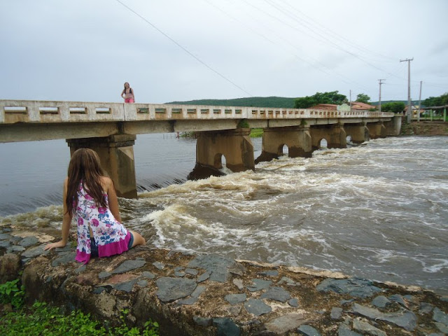

Informações técnicas sobre relevo, população, IDH etc.
| INFORMAÇÕES | |
|---|---|
| Municípios limítrofes | Senador Sá, Santana do Acaraú, Sobral, Meruoca, Alcântaras e Moraújo |
| Fundação | 5 de fevereiro de 1897 (124 anos) |
| Área total | 39 044 hab. |
| Clima | Semiárido |
| IDH | 0,6 — médio |
| PIB | R$ 274 484,96 mil |
| INFORMAÇÕES TERRITORIAIS | |
|---|---|
| Número de habitantes | 38 737 habitantes |
| Superfície de Massapê |
56 658 hectares
566,58 km² |
| Densidade populacional | 68,4 ha./km² |
| Altitude de Massapê | 84 metros de altitude |
| Coordenadas geográficas decimais |
Latitude:
-3.52126
Longitude: -40.341 |
| Coordenadas geográficas sexagesimais | Latitude: 3° 31' 17'' Sul , Longitude: 40° 20' 28'' Oeste |
| INFORMAÇÕES DO MUNICÍPIO | |
|---|---|
| Endereço da Prefeitura Municipal de Massapê |
Massapê
Prefeitura de Massapê
Rua Major Jose Paulino, 191 MASSAPÊ - CE, 62140-000 Brasil |
| Telefone da prefeitura |
(88) 3643-1066
Internacional: +55 88 3643-1066 |
| Fax |
Não Disponível
Internacional: Não Disponível |
| Endereço electrónicoda prefeitura |
Não Disponível
|
| Site oficial do município | massape.ce.gov.br |
| INFORMAÇÕES DO ADMINISTRATIVAS | ||
|---|---|---|
| Prefeita de Massapê | Aline Aguiar Albuquerque | |
| Partido politico | PP | |
| INFORMAÇÕES DE TRANSPORTE | |
|---|---|
| Transporte urbano disponível | Não Disponível |
| Aeroporto |
Aeroporto de Sobral 17.9 km
Aeroporto Pinto Martins
88.2 km
Aeroporto Internacional Prefeito Dr.João Silva Filho
169.7 km
|
| INFORMAÇÕES DE DISTÂNCIA A OUTRAS CIDADES | ||
|---|---|---|
| São Paulo : 2330 km | Rio de Janeiro : 2180 km | Brasília : 1598 km |
| Salvador : 1071 km | Belo Horizonte : 1856 km | Manaus : 2188 km |
| Curitiba : 2619 km | Recife : 787 km | Goiânia : 1759 km |
| Belém : 936 km | Porto Alegre : 3166 km | Guarulhos : 2310 km |
| Campinas : 2276 km | São Luís : 454 km mais perto | São Gonçalo : 2687 km |
| Distância calculada em linha reta! | ||
Conheça mais sobre a história da Massapê.
História Massapê
As terras da Serra da Meruoca e arredores, nas quais o atual município de Massapê situa-se nas terras nas quais habitavam os índios Anacés, Tacari-Arariu e Tabajara. Um dos fatores de fixação populacional do povoamento de Serra Verde (Massapê), foi a volta e o investimento dos "Paroaras" (cearenses que migraram para a Amazônia durante a seca de 1877 e trabalharam no primeiro Ciclo da Borracha, que voltaram bem-afortunados).
Um segundo fator de fixação foi a construção da Estrada de Ferro de Sobral-Camocim e da inauguração da Estação de Trem de Massapê em 31 de dezembro de 1881
Saiba mais sobre os melhores lugares e o que fazer em Massapê.
Turismo
O açude Mirim da cidade de Massapê é um local muito visitado pelos habitantes da região. É um ótimo ponto para passar um dia com a família.

Veja como chegar nos melhores pontos de Massapê